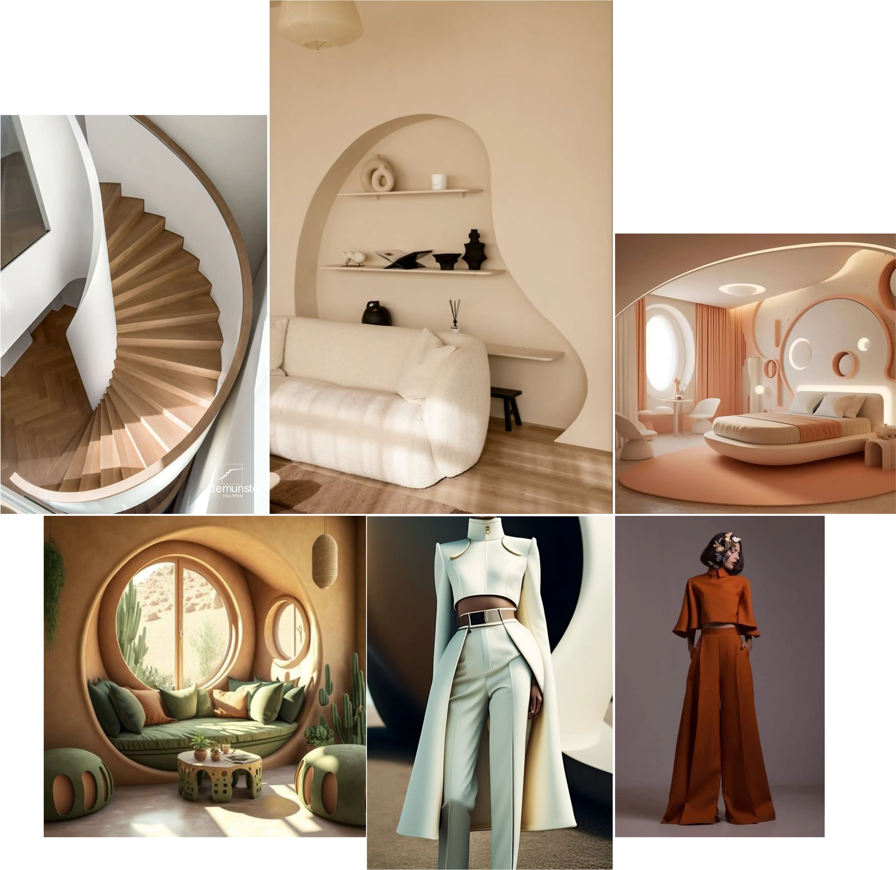

Abstract shapes, in an organic style, evoke the omnipresence of nature in the film. They symbolize a nature that is complex, sometimes incomprehensible, but always worthy of acceptance and respect.
Highlighting our perception of the beauty, complexity, and fragility of nature through these shapes is therefore a central element of La Pointe Rose and Harmony of Doubt in general.
Thus, these shapes are integrated into both the design of the sets and the costumes.
Finally, the typographic choices also adhere to these symbolisms.
